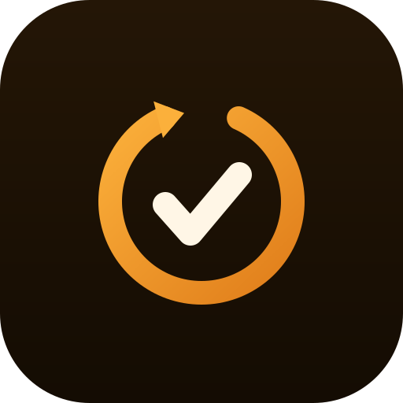

AgentLoopKitnpm package: agentloopkit · CLI: agentloop
Make agent code ready to merge.
AgentLoopKit gives Codex, Claude Code, Cursor, OpenCode, Gemini CLI, and Copilot CLI the same task contract, verification evidence, ship score, and PR handoff.
$ npx agentloopkit init
50+repo-local harness files generated on first run
0cloud services, API keys, telemetry, or postinstall scripts
7steps from task contract to merge-ready handoff
Specify → Ship
deterministic, local, reviewable01Specify
02Constrain
03Plan
04Implement
05Verify
06Review
07Ship
.agentloop/tasks/add-settings-page.md
- Desired outcome, non-goals, likely files
- Acceptance criteria and verification commands
- Rollback notes before code changes start
.agentloop/reports/ship-report.md
- Review-readiness score with dimensions
- Verification, gates, changed files, and risks
- Reviewer checklist and rollback notes
SHOW .agentloop/tasks/add-settings-page.md
PASS pnpm test (110 tests)
PASS pnpm typecheck
PASS agentloop check-gates --strict
SCORE review readiness: 96/100
WRITE .agentloop/reports/2026-06-10-05-11-ship-report.md
WRITE .agentloop/runs/2026-06-10-05-11-ship/
WRITE .agentloop/handoffs/2026-06-10-05-11-pr-summary.md
PREP PR body grouped by review area
ARCHIVE .agentloop/tasks/archive/add-settings-page.md
PASS pnpm test (110 tests)
PASS pnpm typecheck
PASS agentloop check-gates --strict
SCORE review readiness: 96/100
WRITE .agentloop/reports/2026-06-10-05-11-ship-report.md
WRITE .agentloop/runs/2026-06-10-05-11-ship/
WRITE .agentloop/handoffs/2026-06-10-05-11-pr-summary.md
PREP PR body grouped by review area
ARCHIVE .agentloop/tasks/archive/add-settings-page.md